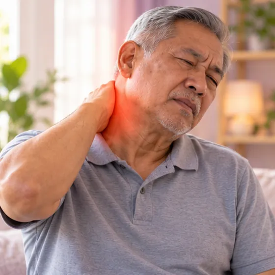
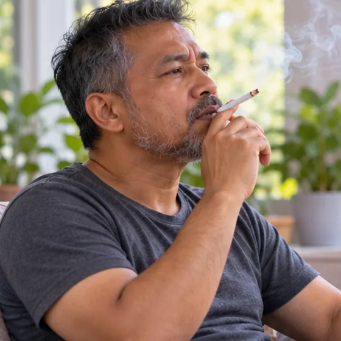

Cervical spondylosis (neck wear and tear)
Also called cervical osteoarthritis or neck arthritis
What it is
Age-related wear of the discs and joints of the neck, often with bone spurs (osteophytes).
- Neck and shoulders
- More common with age
- Stiff and aching
- Which doctor
- Orthopaedic (spine) doctor, neurologist, physiotherapist
- Common in
- Adults over 40
- Contagious
- No
- Course
- Long-term, comes and goes
Medical details
What happens in the neck
The neck (cervical spine) has seven vertebrae, C1 to C7, cushioned by discs and linked at the back by small facet joints. With age the discs lose water and height, the vertebrae form bony outgrowths (osteophytes, or bone spurs), and the joints and ligaments thicken. The levels most often affected are C5–C6 and C6–C7. These changes can narrow the space for the nerve roots or the spinal cord.
Types
- Axial: neck pain and stiffness only; the most common type
- Radiculopathy: a nerve root is irritated or compressed, causing arm pain, tingling or weakness
- Myelopathy: the spinal cord is compressed; less common but more serious
Outlook
Most people have mild symptoms that settle or stay stable with good posture, regular movement and conservative care. A small number develop radiculopathy or myelopathy, which needs a doctor's assessment. Treatment decisions are made by your doctor.
Common signs

Stiff, aching neckCervicalgia 
Pain in the shoulderShoulder pain 
Headache at the backOccipital headache 
Tingling in the handParaesthesia 
Hard to turn the headLimited neck movement 
Weak, clumsy gripHand weakness
Medical details
Symptoms by type
- Axial neck pain: a dull, aching pain and stiffness, often worse at the end of the day or after long periods in one position; less movement and sometimes a grinding feeling (crepitus)
- Cervicogenic headache: pain that starts in the neck and spreads to the back of the head, often on one side, triggered by neck movement
- Radiculopathy: sharp or burning pain from the neck into the shoulder, arm or hand along one nerve, with paraesthesia (tingling or numbness) and sometimes weakness
- Myelopathy (spinal cord): clumsy hands (trouble with buttons or writing), unsteady walking, stiff legs, an electric-shock feeling when bending the neck (Lhermitte sign), changes in bladder or bowel control. This needs urgent medical review
Why it happens

Getting olderDisc degeneration 
Head bent over a phoneSustained neck flexion 
An old neck injuryPrevious trauma (whiplash) 
Heavy bag on one shoulderAsymmetric loading 
SmokingFaster disc degeneration 
Little exerciseWeak neck and back muscles
Medical details
Causes and risk factors
The starting point is disc degeneration. With age the discs lose water, flatten and bulge, which puts more load on the facet joints. The body responds by forming osteophytes, and these can narrow the spinal canal or the exits (foramina) of the nerve roots.
- Age: the main factor
- Sustained neck flexion and repetitive work: phone, laptop and desk work, repeated overhead or heavy work
- Previous neck injury: including whiplash
- Genetics: a family history of neck problems
- Smoking and low activity: linked with faster disc degeneration
See a doctor first if
- Neck pain after a fall or accident
- Sudden, severe pain, or pain with fever
- New weakness or numbness in arms or legs
- Trouble with balance or walking
- Cannot control bladder or bowels: go to hospital now
- Pain not easing after a few weeks
If any apply, please see a doctor before a session.
Keep taking your normal medicine and keep seeing your doctor. Our session is a gentle support and does not replace medical care.
Medical details
How doctors check it
Changes on X-ray or MRI are very common in people without symptoms, so results are always read together with your symptoms and examination.
- History and examination: neck movement, posture, muscle strength, reflexes and feeling in the arms and legs; special tests such as the Spurling test (a gentle neck compression test for nerve-root irritation)
- X-ray: shows narrower disc spaces and bone spurs
- MRI: shows the discs, nerves and spinal cord; used when there are nerve or cord symptoms
- CT scan and nerve tests (EMG, nerve conduction studies) are used in selected cases
Problems that can feel similar
Shoulder joint problems (such as a rotator cuff injury or frozen shoulder), carpal tunnel syndrome at the wrist and nerve compression elsewhere can feel like neck problems, so a doctor checks to tell them apart. Neck, jaw or left-arm pain together with chest tightness, sweating or breathlessness can be a heart problem: call emergency services (999).
Looking after yourself

Screen at eye levelWorkstation ergonomics 
Short breaks, gentle stretchesMicro-breaks and mobility 
A pillow that fits your neckNeutral spine support 
Bag on both shouldersEven load 
Walk and stay activeLow-impact aerobic exercise 
Gentle warmthSuperficial heat
Medical details
Daily care in more detail
- Workstation: top of the screen at eye level, about an arm's length away; keyboard close; elbows at about 90 degrees; feet supported
- Movement: break up sitting every 30 to 45 minutes; gentle neck range-of-motion and shoulder-blade exercises; regular low-impact activity such as walking or swimming
- Sleep: a pillow that keeps the neck in a neutral line; avoid sleeping on your stomach
- Heat: warmth can ease tight muscles; do not use heat on skin that feels numb
- Neck cracking: do not twist or 'crack' the neck yourself
Tell your therapist
- Numb or tingling arm
- Recent neck injury or surgery
- Weak bones
- Pacemaker or metal implant
- Pregnancy
- Dizzy when turning the head
Your therapist will go through this with you before starting.
Questions and answers
What is Cervical spondylosis (neck wear and tear)?
Also called cervical osteoarthritis or neck arthritis. Age-related wear of the discs and joints of the neck, often with bone spurs (osteophytes).
What are the common signs of Cervical spondylosis (neck wear and tear)?
Stiff, aching neck · Pain in the shoulder · Headache at the back · Tingling in the hand · Hard to turn the head · Weak, clumsy grip
Why does Cervical spondylosis (neck wear and tear) happen?
Getting older · Head bent over a phone · An old neck injury · Heavy bag on one shoulder · Smoking · Little exercise
How can I look after myself with Cervical spondylosis (neck wear and tear)?
Screen at eye level · Short breaks, gentle stretches · A pillow that fits your neck · Bag on both shoulders · Walk and stay active · Gentle warmth
Can an AI Body Master session help with Cervical spondylosis (neck wear and tear)?
A session is gentle, needle-free meridian support for your wellbeing. It does not treat or cure Cervical spondylosis (neck wear and tear) and never replaces your medicine or your doctor. Tell your therapist about it before the session starts.
Related conditions
References: Mayo Clinic: Cervical spondylosis; NHS: Neck pain; Cleveland Clinic: Cervical spondylosis; NCBI StatPearls: Cervical Spondylosis
Page updated: 2026-11-05